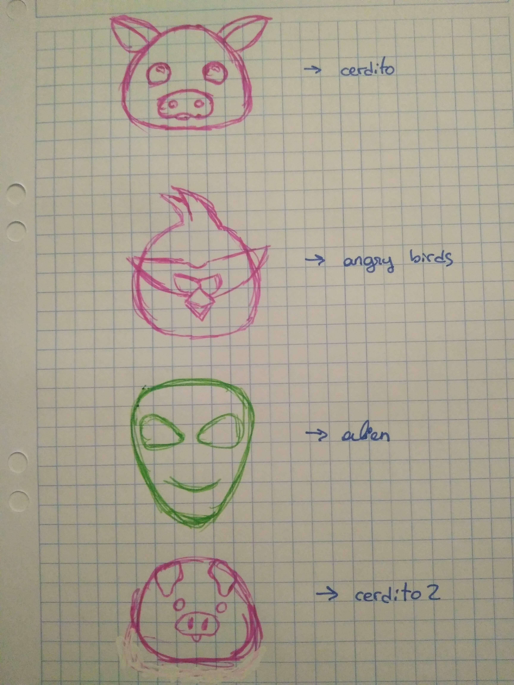

He fet una cara d'un porc. Amb els seus ulls, orelles i nas. Tot fent que sigui interactiu amb el so que vingui de fora, que es mogui i sigui una cara divertida.
Tenia varies idees de cares que poder fer. Pero al final em vaig quedar amb el porquet.
Al principi vaig dibuixar a mà les diferents cares que podria fer. Al final em vaig decidir per el porquet, m'agradava més.
Al principi vaig agafar la cara del robot que vam fer a clase i d'allà vaig partir a fer la meva cara. Dibuixar-la va ser més fàcil de lo que m'esperava, però amb lo que em vaig trobar amb més dificultat va ser posar les mides, cuadrar-ho tot per a que quedes simètric i que fós responsive. Però en general ha m'ha agradat fer aquest treball ja que amb la interactivitat del sò queda una cara molt divertida.

Dibuixos a mà de diferents proves.
El resultat ha sigut una cara que interactua amb el sò que provè del micròfon. Ha sigut un bon exemple per apendre com fer servir el micròfon per algun altre projecte.
He fet tot el codi, el diseny i la interactivitat del projecte. Ha estat un bon projecte per apendre P5 i ensenyar-nos a utilitzar el micròfon de l'ordinador, mòbil...
Pots fer click
aquí i podràs interactiar amb el porquet.